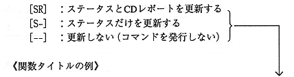

Title | Function | Function Name [SR] | No |
These functions internally call the following functions:
These functions check the command end flag when the command is issued and clear it to 0. If it cannot be issued, a CDC_ERR_CMDBUSY error will occur. In exceptional cases, the command end flag may only be cleared to 0 or checked. (Exclusive processing for issuing commands)
When the processing corresponding to the issued command is completed, the command end flag will be 1. However, it should be noted that it is not 1 at REJECT or WAIT.
For details, refer to “3.2 Communication Method”.